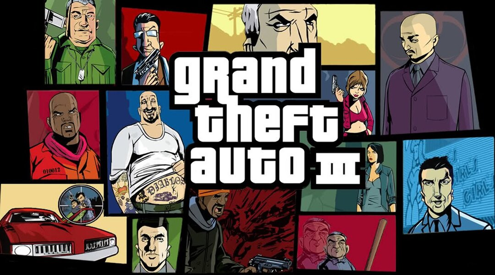
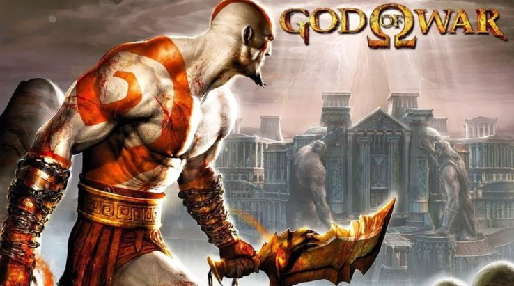

Era certo que a Sony seguiria investindo na área dos videogames após o grande sucesso do primeiro PlayStation. Em março de 1999, a Sony anunciou ao mundo o sucessor do console que havia conquistado o mundo, revelando que o PlayStation 2 seria lançado em breve.
O segundo PlayStation chegou como um dos nomes da sexta geração, concorrendo, assim como seu antecessor, com consoles da Sega e Nintendo, além de também disputar a preferência dos jogadores com um novo adversário: O Xbox.
Se o PlayStation 1 já havia derrotado a concorrência sem piedade, o PS2 não teve muita dificuldade em repetir este feito. Com o 3D popularizado, o console chamou a atenção com jogos repletos de realismo, detalhes impressionantes e mecânicas inovadoras.
Uma pedra, novamente, no caminho da Sega
Com o Sega Saturn levando uma "goleada" do PlayStation 1, a Sega tentou se reerguer na geração seguinte lançando o seu conhecido Dreamcast. Na geração de 128 bits, o DC foi lançado em 1998 com sucesso, conseguindo bons números e agradando aos jogadores com suas inovações e gráficos interessantes. Com seu novo console se tornando cada vez mais popular, a Sega já vislumbrava a possibilidade de recuperar o primeiro lugar na indústria, porém a Sony apareceria novamente como uma pedra no caminho.
Em março de 1999, poucos meses após o lançamento do Dreamcast, a Sony anunciou o seu novo console e fez grandes promessas sobre sua capacidade. Apenas com o anúncio, a Sony já fez com que as vendas do DC já sofressem uma queda preocupante, o que se tornou pior quando em setembro de 1999, após o DC chegar aos Estados Unidos, um protótipo do PlayStation 2 foi mostrado ao público durante a Tokyo Game Show. Com demonstrações de jogos sendo exibidas e a data de lançamento sendo confirmada para março de 2000, o PS2 chamou a atenção de todos e tornou-se o grande assunto do mundo dos videogames.
Na época, o fato do console poder rodar filmes em DVD foi um diferencial muito interessante, afinal os DVD's Players estavam se tornando uma febre também. Com o PlayStation 2 podendo ser utilizado para jogar, ouvir músicas e assistir filmes, o público foi rapidamente conquistado pelo console da Sony e uma verdadeira onda de hype começou.
Quando o PlayStation 2 foi lançado em 2000, não demorou muito para que os números se tornassem impressionantes e o console desbancasse a concorrência. A Sega novamente perdia para Sony.
Um grande lançamento
O lançamento do PlayStation 2 ocorreu primeiramente no Japão e foi um sucesso absoluto. Em apenas dois dias, o console já havia vendido 980 mil unidades, o que era muito maior do que as vendas de seu antecessor nos primeiros dias no mercado.
Os americanos embarcaram no "trem do hype" quando o PlayStation 2 foi o grande destaque da E3 de 2008. Com um trailer de 9 minutos de Metal Gear Solid 2, que impressionou com o visual incrível, o público entrou na febre do PlayStation. Com a apresentação na E3 e uma forte campanha publicitária, o PS2 chegou aos Estados Unidos em outubro de 2000 com 26 títulos disponíveis.
Algo curioso é que o lançamento nos EUA teve problemas devido a alta procura pelo console. Com um milhão de unidades previstas para o lançamento, apenas 500 mil chegaram às lojas. O PlayStation 2 conseguiu um total de US$ 250 milhões em vendas apenas no seu primeiro dia, ultrapassando por muito os US$ 98 milhões que foram alcançados pelo rival, Dreamcast.
Os atrasos de produção fizeram com que muitos jogadores pagassem a mais para adquirir seu PS2, já que o console tornou-se algo difícil de conseguir devido ao alto número de interessados em comprar o console da Sony.
Problemas preocupantes surgiram
Apesar do lançamento ter sido um sucesso no Japão e nos Estados Unidos, na Europa a situação foi um pouco complicada. Se nos Estados Unidos as unidades não foram o suficiente para a procura dos jogadores, no continente Europeu tudo foi ainda pior com apenas 80 mil unidades estando disponíveis. Além das poucas unidades, haviam apenas seis jogos disponíveis no catálogo, o que certamente causou descontentamento em muitos jogadores.
Para dar ainda mais dor de cabeça à Sony, desenvolvedores alegavam que era difícil criar títulos para o novo console, além de outros problemas também terem surgido, como Memory Cards defeituosos.
Enquanto o Dreamcast deixava de ser um concorrente, após a Sega abandonar a produção de hardware para focar no desenvolvimento de software devido a problemas financeiros, a Sony viu rivais ameaçarem o seu console. Tanto o Xbox, da Microsoft, quanto o GameCube, da Nintendo, eram mais potentes que o console da Sony e se mostraram como adversários poderosos.
Um ótimo Natal e um sucesso absoluto
O sol voltou a brilhar para o sucessor do PS1 no final de 2001. Com a chegada de GTA 3, que tornou-se um gigantesco sucesso da Rockstar, o Natal trouxe ótimos números para a Sony. Além do título que revolucionou a indústria e tornou popular o gênero de mundo aberto, outros lançamentos marcantes também ajudaram o PlayStation 2 a explodir nas vendas no final daquele ano.

GTA 3 foi um dos principais títulos da história PS2.
Respeitando - ou até mesmo temendo - o sucesso que estava sendo alcançado pelo Xbox, a Sony resolveu diminuir o preço de seu console, o tornando mais barato que o da Microsoft. Desta forma, o PlayStation 2 seguiu livre para continuar dominando o mercado, mantendo seu sucesso de vendas.
12 anos de vida
Em 2004, quando o PlayStation 2 já havia se estabelecido como um grande sucesso, a Sony resolveu lançar sua versão Slim. Menor, mais silencioso e com um design diferente, o PS2 surgiu nos mercados com esta nova versão e prolongou seu sucesso. Em 2007 e 2008 o console teve novas revisões, ficando ainda mais leve.
Desta forma, o PlayStation 2 manteve-se no mercado por longos 12 anos. A Sony tomou a decisão de descontinuar o console apenas em 2013, ano em que o PS4 foi lançado.
O console mais vendido da história
Apesar de ter passado por problemas e certa dúvida, o PlayStation 2 conseguiu se estabelecer no mercado e derrotar os concorrentes com facilidade. O console foi o grande vencedor da sexta geração e, mais do que isso, também tornou-se o mais vendido da história.
Com 155 milhões de unidades vendidas no mundo inteiro, o PlayStation 2 segue no topo da lista.
Grandes jogos do Playstation 2

Foi no PlayStation 2 que Kratos fez sua estreia.
O PlayStation 2 foi a casa de diversos jogos de sucesso. No segundo console da Sony, muitas franquias poderosas fizeram sua estreia e encantaram os jogadores ao redor do mundo, incluindo God of War.
Shadow of the Colossus, a franquia Metal Gear Solid e Medal of Honor foram nomes que também fizeram história no segundo PlayStation. Para os fãs de corrida, muitos títulos interessantes foram oferecidos, como Gran Turismo 3, Gran Turismo 4 e Need for Speed: Underground.
A lista de jogos que ficaram marcados na memória dos jogadores é imensa, Star Wars Battlefront, Lego Star Wars, Prince of Persia. além disso, o PS2 foi a casa de um dos maiores sucessos da história: GTA San Andreas.
Os jogos mais vendidos do Playstation 2
O GTA San Andreas é o jogo mais popular do PS2. É muito difícil encontrar alguém que não tenha jogado, ao menos um pouco, este grande sucesso. Desta forma, o título mais vendido do PS2 não poderia ser outro.
Seguindo GTA, Gran Turismo 3 e Gran Turismo 4 também ficaram marcados na história do console, assim como a franquia havia feito no PlayStation 1. Confira o top 10.
- Grand Theft Auto: San Andreas - 17.330.000
- Gran Turismo 3: A-Spec - 14.890.000
- Gran Turismo 4 - 11.760.000
- Grand Theft Auto: Vice City - 9.610.000
- Final Fantasy X - 8.000.000
- Grand Theft Auto III - 8.000.000
- Metal Gear Solid 2: Sons of Liberty - 7.000.000
- Final Fantasy XII - 6.000.000
- Tekken 5 - 6.000.000
- Kingdom Hearts - 4.780.000